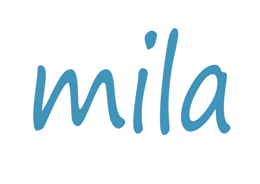
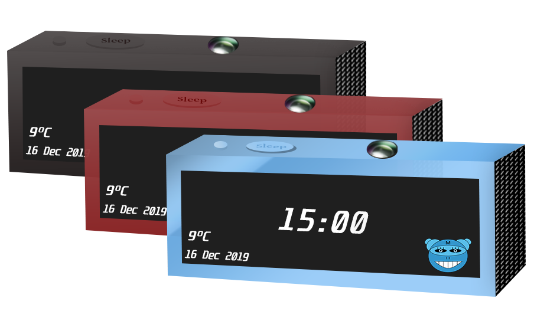
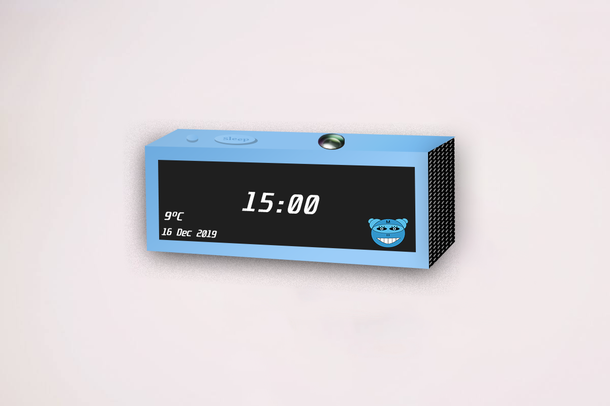

Le réveil efficace pour passer une agréable journée.

Découvrez la conception de mila
un projet ambitieux unique
Début d'une histoire
Un projet nous est demandé : interroger les gens sur l'Homme et l'Histoire.
Pour mener à bien ce projet, nous avons décidé de nous concentrer sur la manière d'éveiller la curiosité des enfants et de leur donner le goût de l'histoire afin de les questionner
9 Décembre 2019
Premier prototype
Après avoir recueilli des témoignages d'enfants et de parents, nous avons décidé de créer un réveil vocal qui nous permet de réveiller les enfants sereinement en leur offrant , après leurs réveils, une petite histoire sur un thème afin d'éveiller sa curiosité
12 Décembre 2019
L'évolution de notre concept
Nous avons travaillé sur notre concept pour l'améliorer. En particulier, nous avons mis en place une Marketplace avec des épisodes disponibles.
18 Décembre 2019
Finalisation et Tests
Nous avons présenté notre projet à un jury. Nous avions des idées d'améliorations et des commentaires pour améliorer notre produit.
20 Décembre 2019
Acheter mila,
un fantastique révéil pour que vos enfants soient enrichis.

mila 2019 édition
Réveil interactif, créé pour éveiller et développer la curiosité de vos enfants.
99.99€